'적절한 3봉' 후보 상위 12개 (R3 봉우리, Scott x1) — 왼쪽: 분포(골=초록 점선), 오른쪽: 시계열(띠 색 = 세 구역, 검은 선 = 128스텝 이동평균)
#1 win256@max1 · 문제 0004 · 레이어 0 · 봉우리 [0.12, 0.24, 0.51] · 골 [0.19, 0.39]
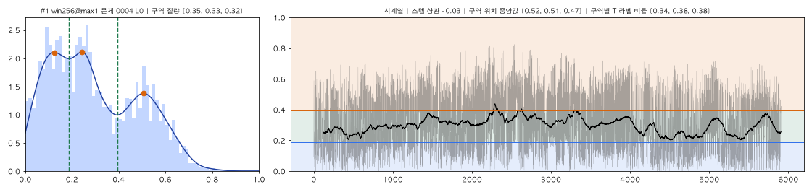
#2 win256_mid@max1 · 문제 0001 · 레이어 3 · 봉우리 [0.18, 0.33, 0.54] · 골 [0.24, 0.46]
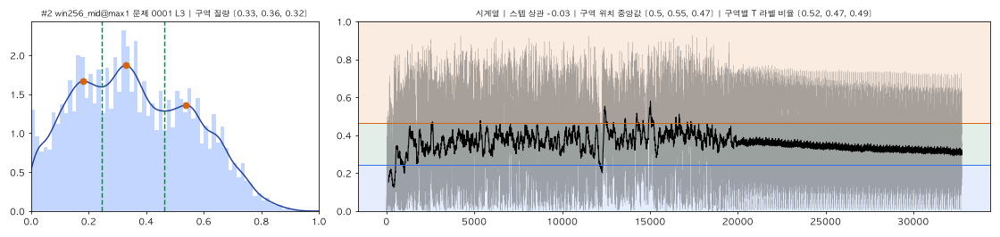
#3 win1024_mid@max1 · 문제 0001 · 레이어 3 · 봉우리 [0.56, 0.71, 0.82] · 골 [0.6, 0.76]
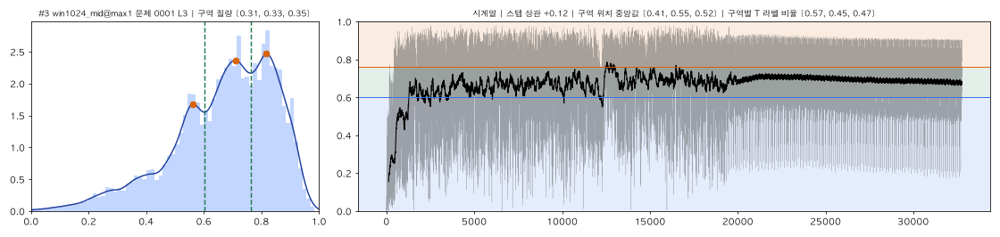
#4 win1024@max1 · 문제 0003 · 레이어 0 · 봉우리 [0.65, 0.74, 0.86] · 골 [0.65, 0.8]
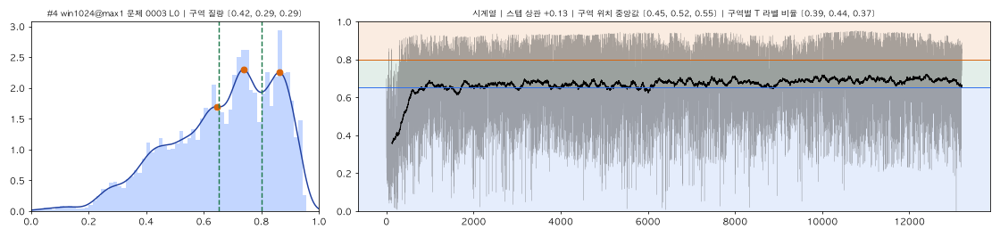
#5 win1024_mid@max1 · 문제 0009 · 레이어 24 · 봉우리 [0.15, 0.46, 0.76] · 골 [0.34, 0.65]
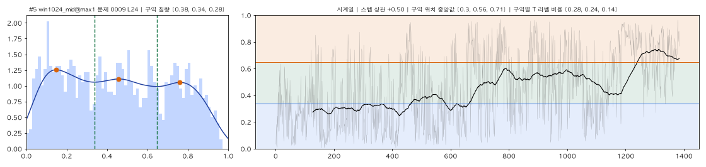
#6 win1024_mid@max1 · 문제 0001 · 레이어 1 · 봉우리 [0.51, 0.71, 0.85] · 골 [0.54, 0.78]
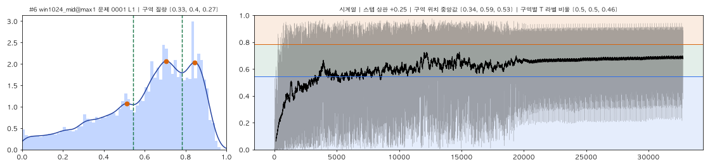
#7 win256_mid@max1 · 문제 0012 · 레이어 24 · 봉우리 [0.25, 0.43, 0.57] · 골 [0.3, 0.49]
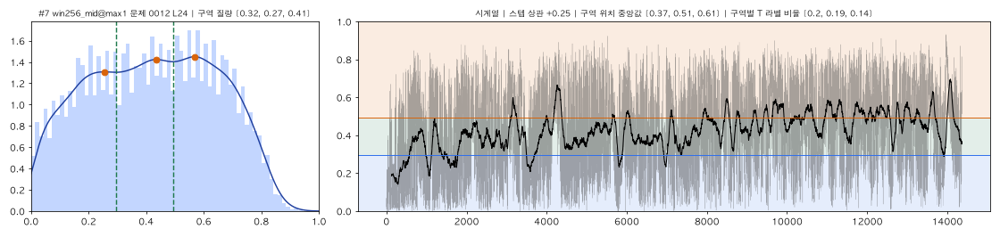
#8 win256_mid@max1 · 문제 0001 · 레이어 28 · 봉우리 [0.14, 0.25, 0.47] · 골 [0.18, 0.42]
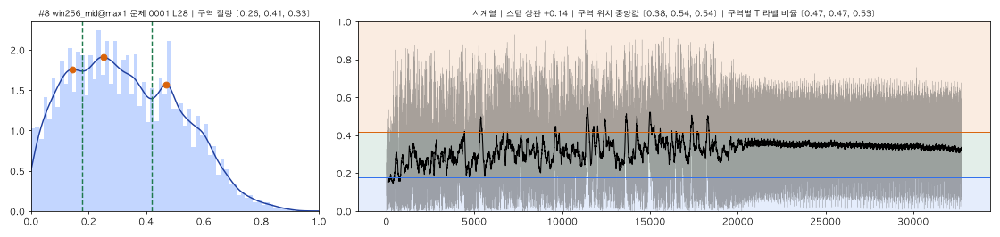
#9 full_mid@max1 · 문제 0009 · 레이어 24 · 봉우리 [0.15, 0.48, 0.78] · 골 [0.39, 0.63]
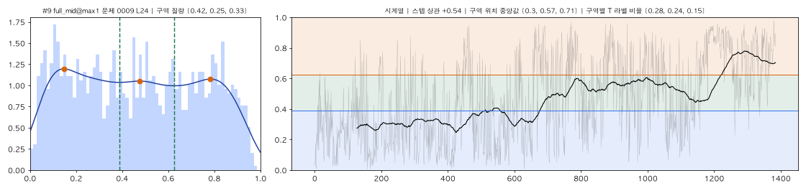
#10 win256@max1 · 문제 0000 · 레이어 0 · 봉우리 [0.1, 0.2, 0.46] · 골 [0.19, 0.37]
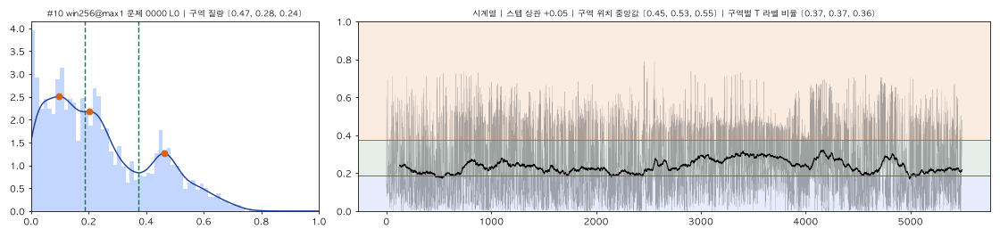
#11 win1024_mid@mass90 · 문제 0001 · 레이어 5 · 봉우리 [0.59, 0.72, 0.81] · 골 [0.61, 0.77]
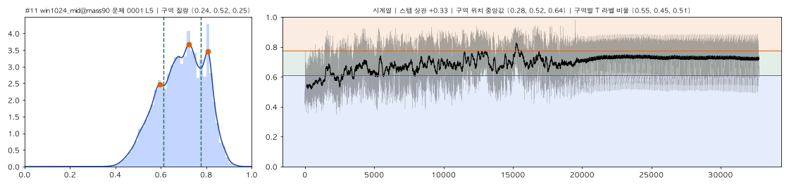
#12 win256@max1 · 문제 0001 · 레이어 18 · 봉우리 [0.42, 0.55, 0.65] · 골 [0.45, 0.6]
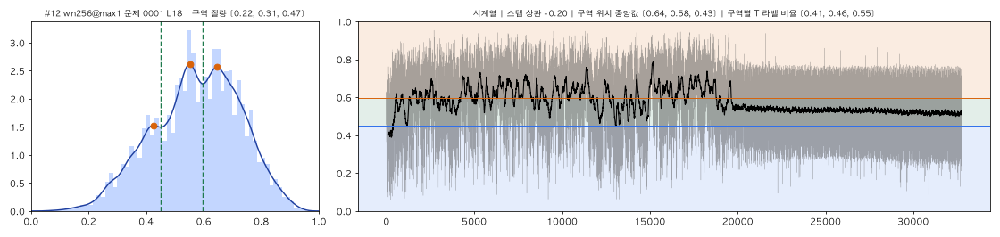